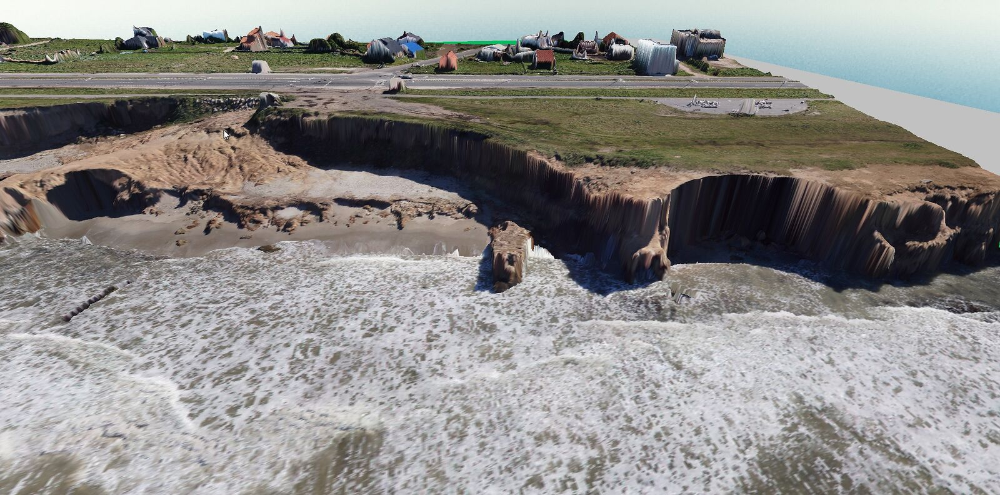
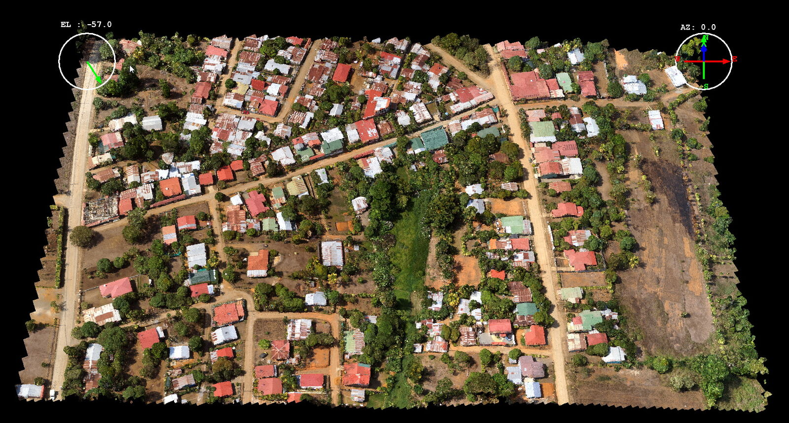
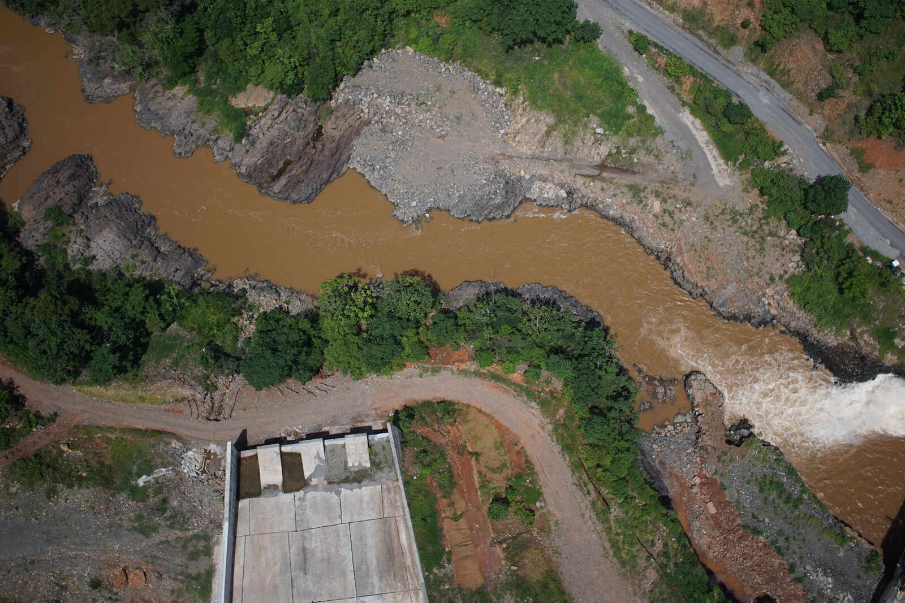
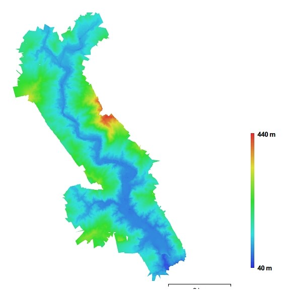

Servicios
Qué hacemos
Doce líneas de trabajo. En la mayoría de los encargos intervienen varias a la vez: el apoyo geodésico, la captura de datos y el producto cartográfico o la plataforma que lo publica.
01
Geodesia y redes de control
Diseñamos la red, la monumentamos y la medimos según las normas técnicas y los estándares de calidad vigentes para levantamientos geodésicos.
- ▸Diseño y densificación de redes geodésicas regionales y locales
- ▸Estaciones CORS: instalación, integración y capacitación
- ▸Puntos de control de primer y segundo orden, con monumentación
- ▸Determinación de modelos de geoide y aplicativos para explotarlos
02
Topografía y GNSS
Levantamientos y replanteos con GNSS en RTK o post-proceso, estaciones totales y niveles digitales, con el procesamiento orientado al cálculo de la obra.
- ▸Relevamientos topográficos y replanteos de obras lineales
- ▸Mensuras: unificación, subdivisión, anexión y desmembración
- ▸Cálculo de movimiento de suelos y certificaciones de avance
- ▸Control e inspección en obra con informes técnicos
03
Batimetría y estudios bentónicos
Disponemos de embarcación propia equipada para el trabajo hidrográfico, lo que nos permite cubrir tanto el relevamiento del lecho como la caracterización de las comunidades que lo habitan.
- ▸Levantamientos batimétricos con posicionamiento en tiempo real
- ▸Estudios bentónicos: muestreo y caracterización de las comunidades del fondo
- ▸Caracterización de sustratos y fondos marinos y fluviales
- ▸Modelos del lecho, perfiles y cálculo de volúmenes de dragado
- ▸Apoyo a obras portuarias, costeras y de protección de márgenes
- ▸Empalme entre el modelo de terreno aéreo y el fondo relevado

04
Fotogrametría y UAV
Planificamos y ejecutamos el vuelo, medimos el apoyo en campo y procesamos hasta el producto final. Para superficies grandes usamos ala fija; para inspección de detalle, multirrotor con el sensor que requiera el trabajo.
- ▸Ortofotos y ortomosaicos de precisión, hasta 3 cm/píxel
- ▸Modelos digitales de elevación, curvas de nivel y restitución
- ▸Nubes de puntos clasificadas y modelos 3D navegables
- ▸Sensores RGB, multiespectral, hiperespectral, térmico y de gas
- ▸Inspección de infraestructura: aeropuertos, líneas, presas y taludes



05
Teledetección y análisis de imágenes satelitales
Trabajamos con las constelaciones de acceso abierto y con imágenes comerciales de alta resolución. La fuente se elige según lo que haya que detectar, con qué frecuencia y con qué presupuesto.
- ▸Imágenes ópticas y de radar, de constelaciones abiertas y privadas
- ▸Series temporales y detección de cambios de cobertura y uso del suelo
- ▸Apoyo con GCP, georreferenciación, corrección y ortomosaicos de precisión
- ▸Monitoreo de deforestación, cuerpos de agua, incendios e inundaciones
- ▸Clasificación supervisada y mapas temáticos derivados
06
Agricultura de precisión y mapas multiespectrales
Mapas pensados para usarse en la campaña en curso, obtenidos con sensor multiespectral en dron o desde satélite según la escala del establecimiento.
- ▸Índices de vegetación y agua: NDVI, NDWI y los que requiera el cultivo
- ▸Mapas de vigor y detección temprana de estrés en el lote
- ▸Análisis de sequía y seguimiento del estado hídrico de la campaña
- ▸Delimitación de zonas intracampo y ambientes homogéneos
- ▸Agro-relevamientos: alambrados, aguadas, relieve y muestreo de suelos


07
Cartografía
Producción cartográfica a escala, desde la hoja de campo hasta el plano aprobado por el organismo competente.
- ▸Cartografía urbana 1:2.500 y regional 1:25.000
- ▸Planos oficiales y de mensura
- ▸Integración en infraestructuras de datos espaciales
08
SIG y geodatabases
Modelos de datos preparados para el uso diario: catastro, activos, servidumbres y patrimonio, con sus reglas de validación y su trazabilidad.
- ▸Diseño de geodatabase y migración de información existente
- ▸Conciliación de bases registrales con la información espacial
- ▸Censos parcelarios urbanos y rurales, catastro y geomarketing
09
Plataformas WebGIS
Desarrollamos a medida el visor, el cuadro de mando o la aplicación de campo donde el cliente consulta, carga y actualiza su información, sobre software de código abierto.
- ▸Visores territoriales y catastrales multiusuario
- ▸Formularios y apps de carga en campo, con trabajo sin conexión
- ▸Servicios de mapas estándar (WMS, WMTS, WFS) para integrar con otros sistemas
- ▸Sistemas de alerta temprana y monitoreo
- ▸Capacitación y traspaso del sistema al cliente

10
Mobile mapping
Integramos captura 360°, IMU y GNSS para inventariar grandes extensiones de activos en una sola pasada, con posición de alta precisión en cada registro.
- ▸Activos viales y eléctricos
- ▸Inventario de servidumbres
- ▸Sistema de referencia lineal
- ▸Inventario de zonas arboladas
- ▸Seguimiento e inspección de obras
- ▸Planificación de costos
11
Estudios de impacto y factibilidad ambiental
Elaboramos el estudio con la misma base cartográfica que levantamos para el proyecto: el modelo de terreno, la ortofoto y los datos de campo propios sostienen la línea base y la evaluación.
- ▸Estudios de impacto ambiental
- ▸Estudios de factibilidad ambiental
- ▸Línea base del medio físico
- ▸Cartografía temática y de sensibilidad
- ▸Medidas de mitigación y planes de manejo
- ▸Monitoreo posterior con imágenes satelitales

12
Territorio, tenencia y riesgo hídrico
Investigación de tenencia, delimitación, ordenamiento y análisis de inundabilidad: el trabajo documental y registral que respalda jurídicamente al levantamiento, y el hidrológico que lo condiciona.

- ▸Estudio tenencial de fincas colindantes y convalidación registral
- ▸Demarcación, monumentación y señalización de áreas protegidas
- ▸Planes de ordenamiento territorial y ambiental
- ▸Cotas de inundabilidad para recurrencias de 100 y 1.000 años
- ▸Delimitación de cuencas y redes de drenaje a partir del MDE
- ▸Modelos de pendientes, asoleamiento e intervisibilidad
Consúltenos por su proyecto
Si el trabajo que necesita combina varias de estas líneas, o no aparece en la lista, escríbanos y lo evaluamos.